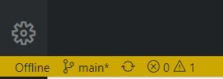
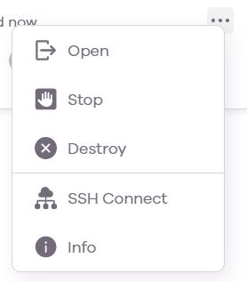
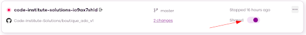
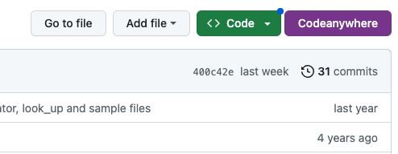

An IDE is where you edit your code but not where you store it. Therefore it is important to push your code to GitHub and maintain your workspaces.
Git add and commit commands simply add your code to a local .git repository. Remember to push your code to GitHub. I recommend pushing your code to GitHub before your lunchbreak and at the end of the day.
To match your git setup to your GitHub it is a good idea to configure your git username and email to your GitHub username and email.
Run the following command, replacing FIRST_NAME LAST_NAME with your name:
git config --global user.name "FIRST_NAME LAST_NAME"
Run the following command, replacing YOUR_EMAIL_ADDRESS@example.com with your email address:
git config --global user.email "YOUR_EMAIL_ADDRESS@example.com"
Workspaces will time out if you are not using them. The only visual signal you will get that the workspace is offline is the yellow band at the bottom.

Therefore, it is best practice to Stop a workspace if you are stepping away from the computer. This is done from the … menu at the right of the workspace in the dashboard.

You can start it again when you are back by choosing Open. This is done from the … menu at the right of the workspace in the dashboard.
Codeanywhere does not automatically delete workspaces so it is up to you to keep the dashboard tidy. When you have finished a walkthrough or project and all code is pushed to GitHub you can delete the workspace using Destroy. This is done from the … menu at the right of the workspace in the dashboard.
If you need to share your workspace, you can do so from the dashboard https://app.codeanywhere.com/ and using the toggle beside the Shared text. When the toggle is active, you can send the URL link to your workspace to anyone and they will be able to access it.

If you would like to open your workspaces direct from GitHub with a Codeanywhere button then here is how to do it. Download the extension from the Chrome extension store. Click on the extension icon from a GitHub repo to launch a workspace. Click on the extension icon from anywhere else to be brought to the Codeanywhere workspaces dashboard.
